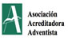
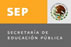
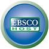

Descripción del Programa
La Maestría en Educación con acentuación en Administración Educativa prepara a directivos o integrantes del equipo directivo de instituciones educativas para enfrentar los escenarios desafiantes de las tendencias educativas actuales, el programa desarrolla la actitud crítica, investigadora, creativa e innovadora de metodologías, técnicas y tecnologías aplicadas a su área de desempeño. Desarrolla en el profesional competencias para: Gestionar y dirigir los procesos de la acción educativa, dirigir el desarrollo docente y dar soluciones integrales en las diversas funciones del área educativa a través de la investigación y la intervención en los desafios educativos.
Perfil de Ingreso
Para garantizar el éxito en los estudios de esta opción educativa, es necesario que el estudiante al ingresar posea las siguientes características:
• Interés y capacidad en la investigación y la difusión de sus resultados.
• Facilidad para la comunicación verbal y escrita de su idioma.
• Sentido de planeación y organización.
• Vocación para el servicio y trato con la gente.
• Facultad para manejar equipos electrónicos y computacionales.
• Facultad para utilizar el internet.
• Hábitos de estudio para autorregular el nivel universitario.
• Sentido de responsabilidad e iniciativa.
• Elevados valores morales.
• Capacidad lectora del idioma Inglés.
• Respeto y amor profundo a su persona, a sus semejantes, a su patria y a Dios.
• Valores y principios morales acordes con los que sustenta esta Universidad.
Competencias a desarrollar
• Sustentar una cosmovisión de acuerdo con una perspectiva ontológica, epistemológica y axiológica a fin de entender su rol en la sociedad y para la toma de decisiones.
• Promover iniciativas innovadoras para el desarrollo de la sustentabilidad ambiental
• Emprender proyectos innovadores acordes al ámbito profesional que identifiquen y atiendan las necesidades de los demás, utilizando herramientas, así como emprendimientos de calidad y de servicio.
• Aplicar modelos innovadores en su área profesional, en función de las necesidades en distintos contextos y niveles y que respondan a criterios de calidad reconocida.
• Desarrollar proyectos de investigación con metodologías propias del campo disciplinar de manera objetiva, ética, responsable y honesta, en la búsqueda de directrices orientadas a la toma de decisiones pertinentes en el desarrollo de la sociedad.
• Comunicar ideas en español e inglés de manera oral y escrita, mediante el uso de estrategias metalingüísticas así como de las tecnologías de la comunicación con apertura, sensibilidad y disposición para interactuar, en forma positiva, en el medio profesional.
• Practicar y promover los principios éticos y legales de la profesión en el mundo real y virtual, manteniendo la calidad, la eficacia y el respeto a la diversidad cultural.
• Gestionar y dirigir los procesos de la acción educativa
• Dirigir el desarrollo docente
• Dar soluciones integrales en las diversas funciones del área educativa a través de la investigación y la intervención en los desafios educativos.
Plan de Estudio
Duración del programa
Dos años y medio, siguiendo la programación sugerente. La modalidad es flexible, se ajusta a tu disponibilidad de tiempo, en este caso la duración del programa depende de cada estudiante.
Acreditaciones y Afiliaciones
Federación de Instituciones Mexicanas Particulares de Educación Superior, A.C.
Asociación Nacional de Universidades e Instituciones de Educación Superior
Asociación Acreditadora Adventista
Secretaria de Educación Pública
Recursos que favorecen el aprendizaje
Sistema de gestión de aprendizaje en entorno virtuales
La Plataforma e42 permite:
- Organizar materiales y actividades de formación en cursos
- Hacer seguimiento del proceso de aprendizaje de cada estudiante
- Evaluar las experiencias de aprendizaje
- Comunicación sincrónica a través de sesiones virtuales
- Comunicación asincrónica mediante foros de discusión, chat o correo electrónico

Acceso a la Biblioteca Virtual UM
La Biblioteca Virtual UM ofrece los siguientes recursos bibliográficos:
ProQuest Dissertations & Theses Database: Es la colección más completa del mundo de disertaciones y tesis. El archivo oficial tesis digitales de la Biblioteca del Congreso y de la base de datos de registro para la investigación de posgrado. En texto completo incluye casi 3 millones de citas de búsqueda para tesis y disertaciones de todo el mundo.
EBSCO: Servicio de información con acceso a 12 bases de datos en inglés y español. En este grupo se destaca Academic Search Premier como la más completa y multidisciplinaria. Registros abundantes en idioma español en Fuente Académica y Mediclatina y una colección de e-books de temas varados.
ATLA Religion Database: Colección de más de 100 revistas seleccionadas por estudiosos
de religión y teología.
The Ellen G. White Estate, Inc: Las obras completas de publicación de la Sra. White están disponibles ahora en línea. En este sitio podrá fácilmente buscar, leer y marcar como favoritos los escritos de Ellena G. White
Redalic: Sistema Open-Access de la Red de Revistas Científicas de América Latina y el Caribe,
España y Portugal, impulsado por la Universidad Autónoma del Estado de México (UAEM).
Presenta resultados temáticos y por países de las revistas indexadas.
Britannica Universal: Obra de referencia en español con más de 250,000 artículos que incluye multimedia. Está enfocada a estudiantes de todas las áreas académicas de nivel medio y superior, así como al público interesado por la cultura y los conocimientos generales.
Servicios de referencia virtual
Los estudiantes pueden consultar directamente por email o a través de la plataforma e42 a un referencista virtual. Los servicios de referencia virtual (NOÉ en español y NOAH en inglés) se ofrecen a través de Question Point.
Personal especializado
Docentes expertos en el área de estudio Equipo de expertos en el diseño y tutoría de cursos en línea
Requisitos de Admisión
Requisitos generales
- Obtener al menos 400 puntos en la Prueba de Admisión a Estudios de Posgrado (PAEP)
- Contar con promedio de 80/100 puntos o su equivalencia en otra escala de calificaciones en los ciclos de licenciatura.
- Demostrar dominio del idioma inglés, comprender textos en inglés.
- Portafolio profesional en el que incluirá: currículum vitae actualizado, logros académicos y profesionales, diplomas, constancias de seminario y cursos asistidos, etc.
- Entrevista con el coordinador de la Maestría (vía web conference).
Requisitos específicos de la Maestría en Educación
Haber cursado a nivel licenciatura las materias de:
- Educación
- Administración
En caso de que el alumno no las haya cursado en su licenciatura, serán prerrequisitos antes de iniciar con su Maestría.
Tramite de Admisión
El trámite de admisión a la Universidad, se hace en línea, para acceder al sistema ingrese desde la página principal de este sitio en el botón “Admisión”.
Al ser admitido como alumno, le enviaremos su carta de aceptación con su número de matrícula asignado y deberá enviar los documentos ORIGINALES por mensajería.
El trámite de su admisión a la Universidad, requiere de la revisión de su EXPEDIENTE COMPLETO con su documentación escaneada. Expedientes incompletos no proceden para trámite.
Documentos solicitados para alumnos mexicanos
- Solicitud de admisión debidamente completada y FIRMADA en la parte denominada "Compromiso del alumno y/o el padre o tutor". (*)
- Acta de nacimiento
- Certificado de licenciatura legalizado
- Título o carta de pasante
- Copia de CURP
- Tres (3) cartas de recomendación (*)
- 6 Fotografías en blanco y negro tamaño credencial (35 mm x 45 mm) con ropa formal, no instantáneas y con su nombre en la parte del reverso
(*) Los formatos de cartas de recomendación y solicitud de admisión las obtiene ingresando al sistema de Admisión. Las cartas de recomendación deben ser enviadas directamente por la persona que la contestó, a través del sistema de admisión, por correo electrónico a la siguiente dirección: ead@um.edu.mx o por fax al número: (826) 26 3 28 10.
Documentos solicitados alumnos extranjeros
- Solicitud de admisión debidamente completada y FIRMADA en la parte denominada "Compromiso del alumno y/o el padre o tutor".
- Acta de nacimiento (Legalizada/apostillada)
- Certificado de estudios de licenciatura/transcripción de créditos desglosadas por grados (Legalizado/apostillado)
- Diploma de terminación de estudios de licenciatura (Legalizado/apostillado)
- Tres (3) cartas de recomendación
- 6 Fotografías en blanco y negro tamaño credencial (35 mm x 45 mm) con ropa formal, no instantáneas y con su nombre en la parte de reverso
(*) Los formatos de cartas de recomendación y solicitud de admisión las obtiene ingresando al sistema de Admisión. Documentos académicos y acta de nacimiento en otro idioma, deben ser traducidos al español y legalizados en el Consulado Mexicano en su país. El GED no es aceptado para realizar estudios en la Universidad de Montemorelos.
Costos y formas de pago
- 2 créditos
- 6 créditos
- $3,352.00
- $10,056.00
- $4,188.00
- $12,564.00
Formas de pago
-
Scotiabank
- Realizar el pago por internet utilizando la clave interbancaria de Scotiabank: 044597253000003611 (esta cuenta es concentradora, por lo tanto, debes poner tu referencia, la cual encuentras accesando a tu cuenta en el sistema académico) -Depósito bancario:
- Sería tal como está en tu portal, el número de cuenta y la referencia que allí encuentras, y con esos datos haces la consignación. Banorte
- Clave para realizar el pago por internet: 072597000610151165 -Depósito bancario:
- Clave para transacciones bancarias: 0061015116
- Pago electrónico:
Importante: Si usan esta de cuenta, deben hacernos llegar la ficha, si no, no será registrada en la cuenta de nadie -Pago eletrónico:
-
Datos cuenta bancaria internacional para estudiantes que viven en USA
- El pago de forma electrónica lo puedes realizar a través de la página de la Universidad: www.um.edu.mx dando click en la opción “DESARROLLO” y ahí en la opción “Pagos y Donaciones en línea”. Es necesario que tengas a la mano tu tarjeta de crédito para realizar el pago y llenar todos los datos que se te requieren. La cantidad que vas a escribir es en PESOS MEXICANOS. Por favor, toma en cuenta, que el sistema tarda a veces hasta 5 minutos o más en dar respuesta. No intentes realizar la operación de nuevo, hasta que el sistema te responda si tu operación ha sido ACEPTADA o DENEGADA, ya que podría hacerle el cargo a tu tarjeta por más de una vez. Aún y cuando realices la operación y no te de ninguna respuesta, solo avísame para que verifiquemos en nuestro sistema contable. No marques a los números que indica la página de pago electrónico, únicamente ponte en contacto con nosotros para confirmar si tu transferencia aparece en nuestro sistema.
- Depósito bancario con los siguientes datos:
UNIVERSIDAD DE MONTEMORELOS [CUENTA BANCARIA INTERNACIONAL]
Banco: Banamex USA Cuenta: 5802282901
A nombre de: Universidad de Montemorelos Clave de Transferencia SWIFT: CALCUS6LXXX
Dirección: 2029 Century Park East Piso 42, Los Angeles, California 90067 Tel: 1 800 222 1234
NOTA: Enviar copia de depósito al correo umvirtual@um.edu.mx
Cuentas con dos opciones para hacer tu pago:
-
Datos pago electrónico y/o cuenta bancaria internacional para estudiantes que viven en un país diferente de USA y México.
- El pago puedes realizarlo de forma electrónica por medio de la página de la Universidad: www.um.edu.mx click en la opción “DESARROLLO” y ahí en la opción “Pagos y Donaciones en línea”. Es necesario que tengas a la mano tu tarjeta de crédito para realizar el pago y llenar todos los datos que se te requieren. La cantidad que vas a escribir es en PESOS MEXICANOS. Por favor, toma en cuenta, que el sistema tarda a veces hasta 5 minutos o más en dar respuesta. No intentes realizar la operación de nuevo, hasta que el sistema te responda si tu operación ha sido ACEPTADA o DENEGADA, ya que podría hacerle el cargo a tu tarjeta por más de una vez. Aún y cuando realices la operación y no te de ninguna respuesta, solo avísame para que verifiquemos en nuestro sistema contable. No marques a los números que indica la página de pago electrónico, únicamente ponte en contacto con nosotros para confirmar si tu transferencia aparece en nuestro sistema. NOTA: En Cliente debes colocar tu nombre completo.
- Depósito bancario con los siguientes datos:
UNIVERSIDAD DE MONTEMORELOS [CUENTA BANCARIA INTERNACIONAL]
Banco: Banamex USA Cuenta: 5802282901
A nombre de: Universidad de Montemorelos Clave de Transferencia SWIFT: CALCUS6LXXX
Dirección: 2029 Century Park East Piso 42, Los Angeles, California 90067 Tel: 1 800 222 1234
NOTA: Enviar copia de depósito al correo umvirtual@um.edu.mx
Cuentas con dos opciones para hacer tu pago:
Los pagos se realizan una vez que ha sido aceptado como alumno. Los pagos en moneda extranjera están sujetos a cambios en base a la cotización del dólar.
Uso de formato de pago por pagarés a los alumnos de maestría: A partir de la inscripción de Agosto se autoriza el uso de pago por pagarés para los alumnos de maestría de la modalidad virtual, las políticas para uso de pagarés son las siguientes:
- Un pago inicial que incluye: El monto total de la matrícula + el 35% del importe total de la colegiatura.
- El 65% restante se dividirá en tres pagarés. A este monto se agregan $250.00 (doscientos cincuenta pesos M/N) por manejo de pagarés.
Descuento por pronto pago: Aplica para alumnos que al inscribirse, pagan el 100% del importe de colegiatura y matrícula en un solo pago.
Calendario
Fechas importantes para el ingreso al semestre de Agosto - Enero del 2015:
- De Agosto 21 a Enero 22 - Admisiones.
- 5 de Diciembre - Último día de recepción de documentos.
- Del 5 de Diciembre al 19 de enero - Pagos, depósitos y transferencias
- Del 5 al 22 de enero – Inscripciones
- 3 de Febrero – Activación de inicio de materias